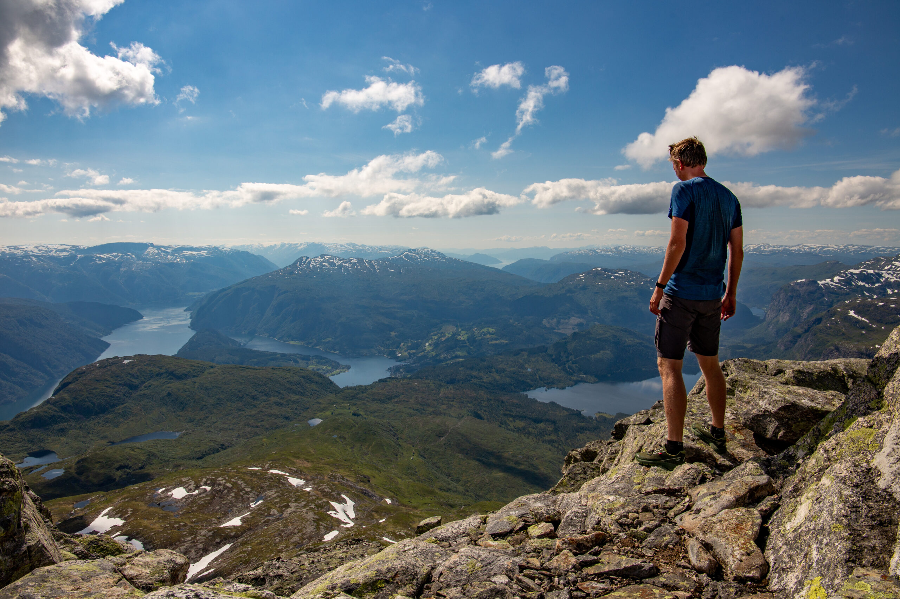
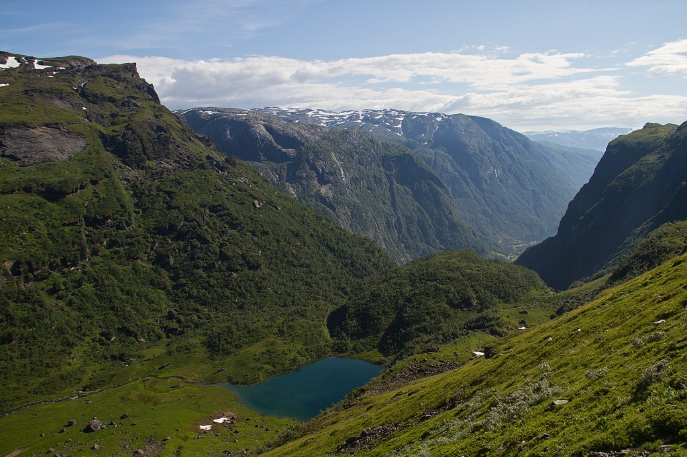
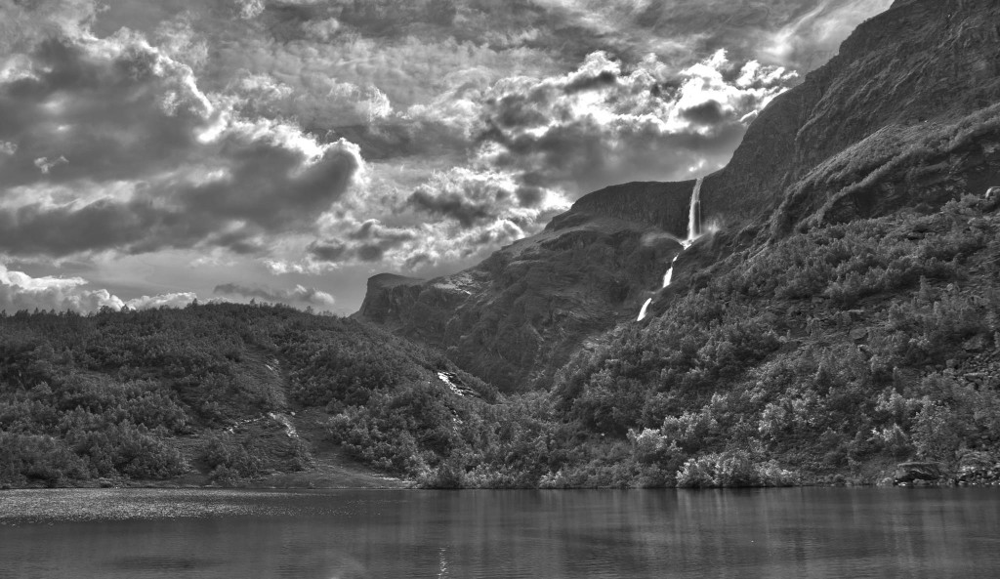
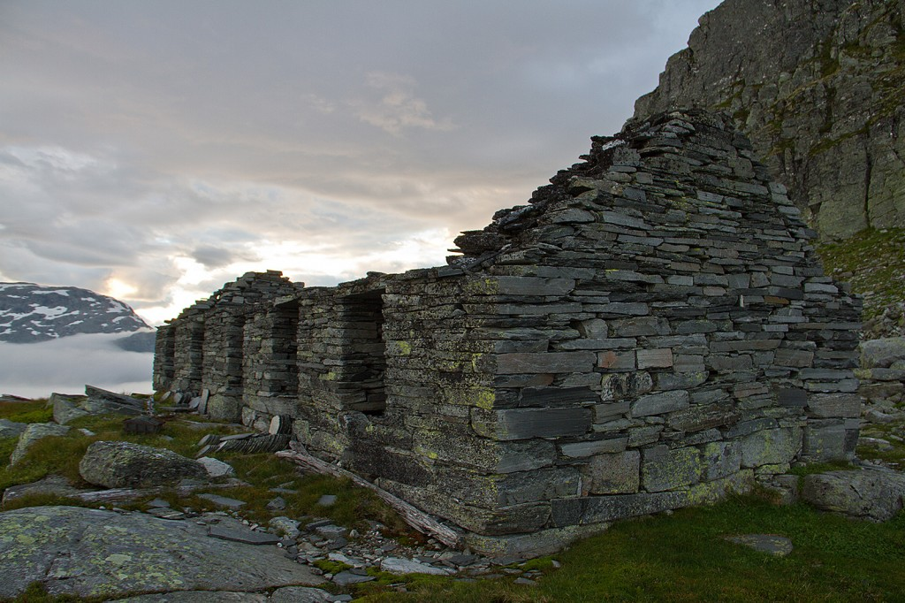

Vassfjøro

Vassfjøro er eit fjell du fort legg merke til. Det stikk opp med sin karakteristiske sørvegg som ein bratt godbit over Ulvik og Osa. Vassfjøro strekk seg 1633 meter over havet og byr på flott utsikt i alle himmelretningar. Sjå kart hjå Ut.no.
Turen som blir beskrive her tek opp mot 10 timar, men det går an å effektivisere turen med mange timar. Når turlaga i Granvin og Ulvik tek turen kvar sommar så er det personar i alle aldrar med, og dei aller fleste klarar turen fint. Det er ingen problem å avbryte turen på kva tidspunkt som helst; du får uansett ein fantastisk opplevelse.

Dersom du berre er interessert i å sjå på fleire bileter av turen til Vassfjøro kan du sjå fleire av desse dette samlealbumet: Vassfjøro 2020.
Vassfjøro er som sagt eit fjell du legg fort merke til, men det er og eit fjell du lengtar tilbake til og som du etter å ha stifta bekjentskap med vil drøyme deg tilbake til. Du hugsar det godt. Det gjer deg mykje, og krever berre i betaling å ta pusten og kanskje litt av mjelkesyra di. Olav H. Hauge skriv følgande i "Ogmund rid heim":
Du kunde godt venda heim.
Ingen jorsalfar hadde lengre veg.
Stengd av drivis i Kvitehavet.
Lange var elvane i Russland.
Med askespjot frå Spånheim
stod de ved Jeriko.No rid du heim yver sletta i Ungarn.
Kveldsoli skin.
og vinden helsar frå nord.
Då ser du skautet på Vassfjøro.
Tårone dryp under hjelmen.
Namnet sitt har Vassfjøro fordi ho er eit vêrmerke. Når det legg seg ein skoddedott framfor Vassfjøro, blir det regn, sjølv om sola skin aldri så fint elles i bygda. Olav H. Hauge skriv:
INGENTING STEND PÅ
Vassfjøro har klædt seg
i sekk og oske
og drege hetta ned.
Dei hine fjelli laugar seg
i sein kveldssol, det er då
ingenting som stend på.
Uvêr yver Nordsjøen,
melder kringkastingi.
Det er mange moglege ruter opp på Vassfjøro, mellom anna frå Hardangervidda. Dersom du har lyst å få med deg litt fjord i same slengen så anbefalar eg likevel at du tek turen enten frå Ulvik eller Osa, sjølv om det blir nokon høgdemeter å forsera. Den brattaste og mest slitsomme turen er nok å gå frå Osa, men det er og den villaste og flottaste - med turen inn til Osete som ein stor opplevelse. Dette er ein frodig dal med ville elver, fossar og spisse fjelltoppar på alle kantar. Vegen opp blir etterkvart bratt og tung, men du sluker i det minste mange høgdemeter fort - så lenge beina heng med.




Frå Ulvik kan du gå frå fleire stader, der Ljono eller Solsævatnet er nokon av dei mest populære utgangspunkta. Det anbefalast å gå innom Jonstøl, ein nydeleg støl som er ein perfekt pauseplass for å få litt meir motivasjon før du tek fatt på dei resterande stega. Eg ender ofte opp med å gå frå eller til "Gauro", ikkje langt frå Øydvin. Dette er også i området med allerede nevnte Ljono.
Turbeskrivelse
Den 12. august 2012 gjekk eg frå Osa til Osete, opp dei bratte liene frå Osetetjørni og slo opp teltet på Vetle Vassfjøro - rett under sjefen sjølv. Her er det mange eldre steinbuer som har vore brukt i helleproduksjon i gamle dagar - noko som er spennande å utforske. I tillegg har du sjølvsagt utsikta over Hardanger, med fjorden, Ulvik, Midtfjell, Kjerringafjellet og Espelandsdalen, Ljonesskrulen og mykje anna som kan få deg til å sitta i ro i mange timar og nyta livet. Når kvelden kom snikande så gjorde og tåka det i mitt tilfelle. Ein skulle tru at det ville dempa opplevinga litt, men den blei liggande nede i dalsøkka og gjorde utsikta endå betre enn vanleg. Magisk.



Turen opp på Vassfjøro frå Vetle Vassfjøro krev ein siste innsats når det gjeld stigning. Området under Vassfjøro er flatt og fint med mange små vatn og elver, men du må etterkvart innsjå at på siste rest må beina igjen jobba hardt. Stien kan vere vanskeleg å fylgje opp når det er stor vassføring, men vardar er satt opp og valgmoglegheitene er ikkje så mange, så å finna vegen går som oftast bra. Det ligg som oftast mykje snjo inne i dalen, der den mange år ikkje forsvinn i heile tatt. Det er fine steinar å klyve på utanom, og etterkvart så er du på toppvarden - klar for endå meir utsikt. No får du i tillegg til fjordane sjå langt innover Hardangervidda, der Hardangerjøkulen gjerne skiller seg ekstra godt ut.


Nedatt går du same vegen du gjekk opp. Det er fort å gå for langt ut på kanten for tidleg, så prøv å legg merke til nokre kjenneteikn. Når du kjem ned på flatane under fjellet igjen så siktar du deg inn nedanfor helleuttaket dersom du ikkje allerede har vore der. Hald deg på nedsida av Herbergsryggen for å sleppe bratte lier. Gå forbi Svartavatnet, langs Vassdalane, forbi Olstølen og ned til Jonstølen. Frå Jonstøl kan du nå Ljono, Gauro, Solsæ eller andre stader. Det er generelt særs flotte stiar heile vegen, sjølv om det er fort å miste den sidan du ofte blir gåande å nyte utsikta.

Dersom det er nokre beskrivelsar her som ikkje gjer meining, eller om det generelt er noko du lurar på så er det berre å ta kontakt. Du finn GPS-loggar under, og i tillegg kan det vere ein ide å lese beskrivelsane frå westcoastpeaks.com.
Fleire bileter finn du som nevnt tidlegare i dette albumet på Google Photos: Vassfjøro 2020.
GPS
Ruta eg gjekk på teltturen her tok to dagar, og innebar mykje utforsking, derfor har eg lagt ved GPS-loggen frå fjorårets tur der eg gjekk meir eller mindre den same løypa på ein dag. Årets tur kan du sjå på Endomondo om du har lyst: Dag 1 og dag 2.